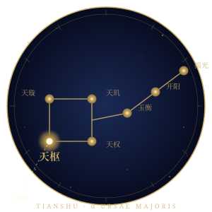
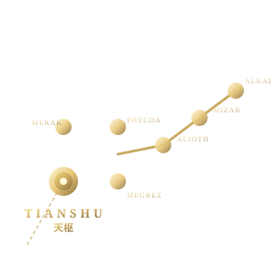
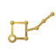

# 文件位置 # 在 HTML 中使用 <img src="assets/tianshu-starchart-color.svg" width="280" alt="天枢"> # 单色版染色（通过 CSS color） <img src="assets/tianshu-starchart-mono.svg" style="color: #fff;"> <img src="assets/tianshu-starchart-mono.svg" style="color: #b8302d;"> <!-- 朱砂红印章 --> <img src="assets/tianshu-starchart-mono.svg" style="color: #c9a961;"> <!-- 鎏金 --> # 内嵌 SVG（推荐用于文档/网页，可被 CSS 控制） <object data="assets/tianshu-starchart-color.svg" type="image/svg+xml"></object> # Favicon (放在站点根目录) <link rel="icon" type="image/svg+xml" href="/tianshu-favicon.svg"> # Markdown 引用